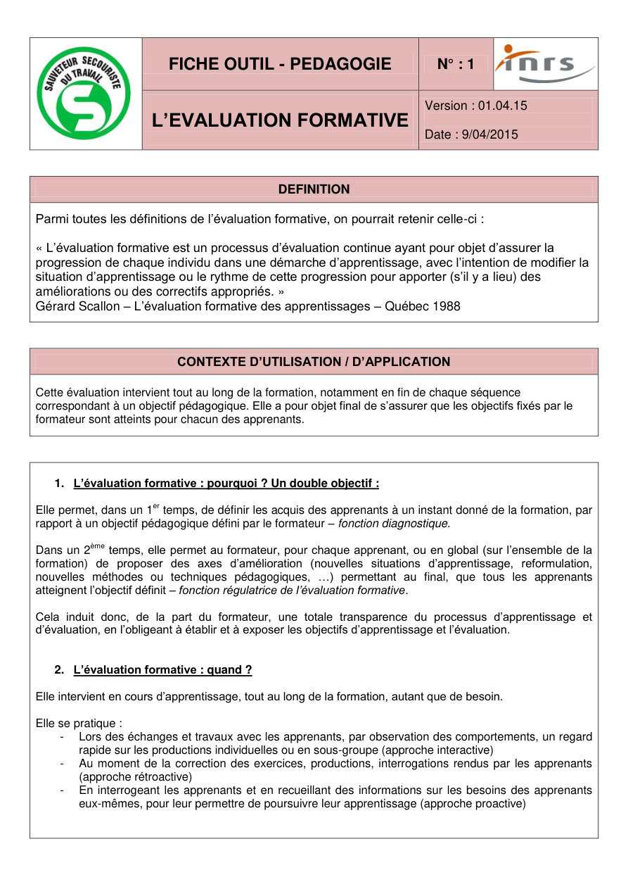
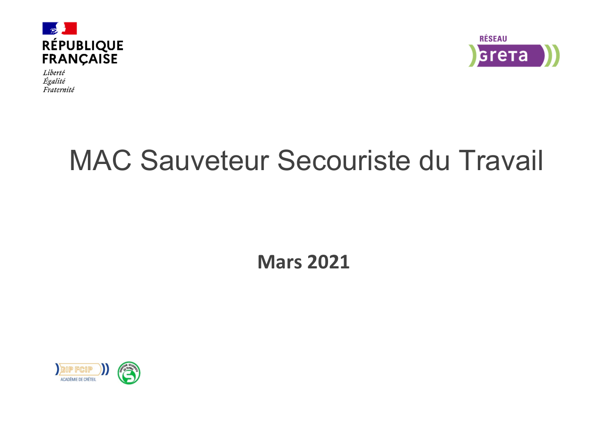
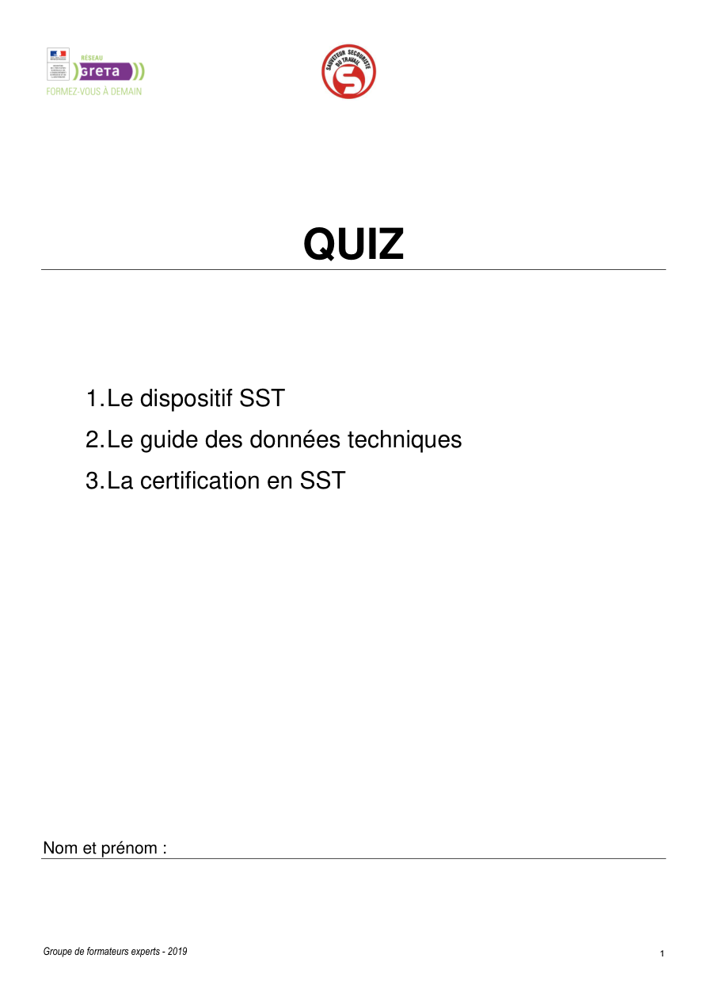

Outils INRS visibles
Les documents et repères officiels sont mis au premier plan dans les modules, les outils et les renvois rapides.
Plateforme SST premium
Accès direct par compétences, situations, publics, outils institutionnels, ressources intégrées PAP / PI et démonstrations utiles au formateur comme au stagiaire.

Les documents et repères officiels sont mis au premier plan dans les modules, les outils et les renvois rapides.

Entrée par les compétences, les situations d’urgence, les gestes critiques et les variantes par public.

Des modules visuels, des outils consultables et des accès directs aux conduites à tenir terrain.
Retrouver immédiatement les branches critiques et les conduites à tenir.
Ouvrir les supports exploitables en formation sans quitter la plateforme.
Basculer immédiatement vers les fiches d’intervention critiques.
PAP visuel : observer, caractériser le danger, comprendre l'événement déclencheur, proposer l'action et transmettre.
PI arborescent : examen, alerte, conduite à tenir et renvois directs vers les fiches geste adulte, enfant, nourrisson.
Livret terrain, Staying Alive, ressources visuelles et révision guidée pour entraîner les automatismes.
Entrer par l'objectif pédagogique et la compétence évaluée.
Basculer immédiatement vers la conduite à tenir prioritaire.
Retrouver les variantes adulte, enfant et nourrisson dans chaque branche de décision.
Ouvrir le livret, le PAP, le PI, la révision ou les outils DAE.
Intégration directe du support local existant, enrichi d’un cadre visuel, d’un accès dédié et de liens vers C6.
Ouvrir le module PAPArborescence secourir + branches C2-C3-C4-C5 + renvois rapides vers chaque geste et chaque public.
Ouvrir le module PITéléchargement, aperçu intégré, impression, sommaire et accès directs vers les conduites à tenir prioritaires.
Ouvrir le livretLocalisation des DAE, citoyens secouristes et articulation immédiate avec l'arrêt cardiaque et la défibrillation.